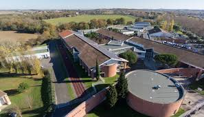
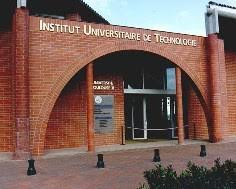

~/ parcours
Mon parcours
d'étudiant.
Du lycée à l'IUT, et la route vers l'expertise en cybersécurité.
Parcours pré-BUT
J'ai fait mes 3 années de lycée au Lycée Pierre-Paul Riquet. En première, j'ai choisi la voie générale avec les spécialités maths, physique-chimie et NSI (Numérique et Sciences Informatiques). En terminale, j'ai abandonné la spécialité NSI et gardé les deux autres.
J'ai obtenu mon BAC avec mention assez bien.

Parcours BUT
Cette année, j'ai intégré l'IUT de Blagnac dans la filière Réseaux et Télécommunications pour, dans le futur, pouvoir me former en cybersécurité. Je trouve que les cours sont intéressants — parfois, certains sont compliqués à comprendre.
Je souhaite, en deuxième année, obtenir la spécialité cybersécurité et éventuellement faire de l'alternance pour me former dans le domaine du réseau.

Après le BUT
Intégrer une école d'ingénieur spécialisée en cybersécurité pour devenir expert en cybersécurité.
J'ai envie d'aider les personnes et les entreprises à lutter contre les cyberattaques. Si je n'atteins pas cet objectif, j'aimerais faire un master pour devenir expert en cybersécurité.